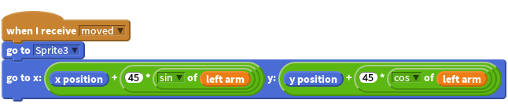

Activity Checklist
A jointed arm is made from two sprites, they can be quite tricky to build as the two parts of the arm need to know where each other are in order not to separate and look strange. This is done using a mathematical calculation called trigonometry that is regularly used in the production of video games, robots and other cool technology. Our first arms sprite is the upper arm, this is not too tricky, as it will simply rotate at the shoulder and move along with the body and all our other body parts. One thing we will need to add however is setting our arm direction to variable (more on this later).
![when [space v] key pressed
turn cw (15) degrees
set [left arm v] to (direction)
broadcast [moved v]
change x by (move speed)](5c86347fddb919db0af5f853a218178377cd05d1.png)
This next calculation is used to control the lower arm. This is where we use trigonometry to calculate where the lower arm should be place (you might need to ask for help when doing this).

First of all our arm will update when the broadcast moved is used but you can use any broadcast as long as your upper arm is broadcasting it or moving to the same broadcast as your lower arm.
Next our lower arm positions itself at the center point of the upper arm, this should be the point where the top of the upper arm meets the shoulder body. We then want to reposition the lower arm elbow to the other end of the upper arm. Imagine that as the upper arm rotates around the shoulder we draw a circle, first of all what is the radius of that circle? Well our arm in this example is about 45 pixels long.
We then want to find out what point around that circle the other end of our arm is, and position our lower arm there. We use the trigonometry calculation above to reposition our lower arm and create an elbow.